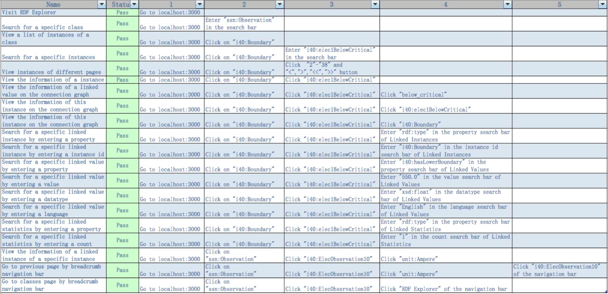

Term 2
Introduction
We have done extensive testing on the GUI. We tested each iteration of the GUI which helped us figure out things that we needed to change for the next iteration and also helped us be sure that our implemenation and architecture for the system was scalable and safe.
Unit Testing, Integration Testing, Code Coverage
We used Jest for our Unit tests. We tested each component extensively and seperatly. Every time someone wants to contribute code, a pre-commit script is run (with Node) to see if the new code passes all the unit tests. Only then can the safe code be pushed to git. To see how good our coverage was, we used Jest's --coverage option. We chose Jest because it's simple to use, isntall, and integrate to a project. The community is big enough and support is available easily. It also has good add-ons to support separate React elements testing. This proved to be very useful.
Load Testing
This was one of the most important type of testing we did. As our GUI was going to be used with gigantic RDF graph databases in which one node can be connected to million other nodes, we need our GUI to be responsive and to be able to handle such huge amount of data. This meant our filtering tables should be able to handle data with over a million rows and still be quick and responsive.
Initially in our first Milestone we just focused on creating the GUI. Later on in our second Milestone,
we actually wrote a Python load testing script, which can be found in test/load_test.py. This
load testing script is basically a Flask API which simulates a huge RDF graph database with a million
RDF classes each with a million RDF instances which were further connected to a million other RDF instances
and values.
In Milestone 2 we then used the load testing script to test our GUI against it and found out that it became a bit slow and our instant search wasn't functioning. So in Milestone 3, we rethought our serach and filtering architecture to handle these issues. We changed our filtering component to a scalable table with built in pagination and filtering. We removed instant serach and replace to handle the query after it had been completed. This drastically improved the performance of our GUI.
So in the final version of our GUI, it is able to handle such huge amounts of data with ease and is very quick and responsive as well. The video below show our GUI working under the load testing script and easily handling millions of rows of data.
Add Load Testing Video
User Acceptance Testing
Testing Strategy
User Acceptance Testing (UAT) is the final phase of the testing period of our software. In the UAT, we will test the software by real users to check whether it can handle required tasks in different scenarios based on the final requirements.
For the RDF explorer, our objectives are:
1. RDF explorer provides a straightforward way to traverse the database, without getting lost.
2. RDF explorer provides filtering and search functions.
3. RDF explorer gives ways of visualizing data and instances in a meaningful way.
4. RDF explorer gives insights on how data, instances, classes, nodes, are related and connected.
According to all of above, we run the app on localhost and to test for the RDF explorer’s functionality and workability.
This table shows our results of app functionality testing:
Features to be tested:
1. Database browsing
2. Data filtering and search
3. Data insights
Test Environment
Our testers use the demo version of RDF Explorer at http://localhost:3000 using Google Chrome Version 56.0.2924.87 (64-bit).
Targeted tester
Bosch Engineers – They are the expected target users and their user experiences are particularly important on whether RDF Explorer provides a reliable way to traverse huge RDF datasets.
Undergraduate students of Computer Science – We choose students who are familiar with JavaScript application development process. They are able to find bugs and flaws of our application.
Response Received
Most feedbacks we received are positive - our demo version of RDF Explorer are able to handle tested features. Yet we also receive some feedbacks about the improvement suggestions:
- Providing more exhaustive statistical information about individual nodes and the graph as a whole - Evaluating the UX and improving on the usability based on actual user feedback - Making graphical elements more configurable - Providing write access beyond the current read-only implementation - Offering predictive functionalities, such as user-identity based recommendation, general link prediction
Conclusion
These feedbacks from real users are quite useful for us to further improve our application to make it ready for Bosch engineers. We will discuss about the feedback and suggestions of statistics part in further development. In conclusion, the UAT gave us a chance to get feedbacks from real users and help us to prepare the application to be used by Bosch engineers.
Term 1
Introduction
Here, we propose our initial strategy for how to test our system. We show how we’ll approach our unit tests, but also our functional and integration tests. We have also looked at how to perform user acceptance testing.
Comparison of alternatives and investigation of relevant available testing tools and methods.
After a lot of research into testing tools for Javascript, we had to decide between either Jest or Mocha for testing.
Jest is a Javascript testing framework created by Facebook, who are also responsible for
maintaining Redux and creating React. Moreover, it is also the recommeded testing framework
for Redux.
While, Mocha is arguably the most popular Javascript testing framework for Node. It is very
easy to use and has a lot more documentation and tutorials as it has been around for a really
long time. Jest on the other hand is very new just like Redux.
We decided to go with Jest as it was created with React and Redux in mind and as it is also
the recommended by the Redux community. All the examples in the Redux documentation also
use Jest so we believe Jest will be the better option.
Moreover, Jest also allows us to test our code coverage without having to install any additionaly
libraries. It has additional features like running tests in parallel to reduce test time.
Nightwatch.js will allow us to do functional and integration testing. Nightwatch works using the Selenium web drivers
and provides a very extensive testing suite. By getting things to run in the browser, Nightwatch allows us
to see how our different React and Redux components work together. This will help us do integration and functional testing.
We will be using Circle CI as our continuous integration tool. We also looked at Travis CI and
Jenkins. Travis is only free if your application is open source but we couldn't make our code accessible to
the public. Meanwhile, Jenkins takes a lot more effort to set up and offers a lot more options. But, as we
didn't need the extra options, we decided to choose Circle CI.
Circle CI is free for one project, and also gives us an interface to see our tests running in the container.
It also allows us to SSH into the container to fix any problems with the container environment.
Although we do not need continuous deployment, Circle CI also allows us to use scripts like Python Fabric
to SSH into a remote server and deploy the application.
User Acceptance Testing
User acceptance tests are conducted to see if the software is what the client expected.
It is very important to conduct such tests, because otherwise there might easily be a rift
between what the developers do and what the clients think they will get.
We decided to have UATs at every iteration of our app. Mistakes and misunderstandings would
be detected early this way. This also ensures that at each step of our project, the clients
know exactly what it will be like, and we know what to do. This gives them the opportunity
to be involved and give constructive input, while it gives us valuable information on the
project, as well as insight and feedback for future iterations.
How automation can be achieved.
We can set up Circle CI to watch certain branches on our Git project. Whenever we push to a branch watched by Circle CI, it automatically gets the current code from the branch in a container and sets up our environment in the container. After this it runs our test script, which will be set up to run all our tests written in Jest. If all the tests pass, Circle CI will identify that the code in the branch is safe to be deployed or merged to the main branch. If tests don't pass it will alert us and give us details of the failing tests.